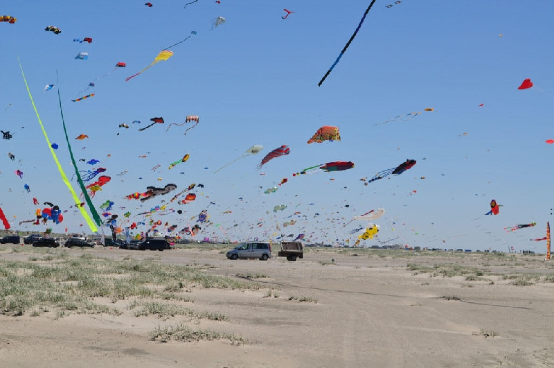

Am ersten Juniwochenende findet jährlich das Jazz-Festival Römö-Jazz statt.
Um Pfingsten findet ein großes Motorradtreffen statt.
Am ersten Wochenende im September findet jährlich ein internationales Drachenfest statt. Dabei steigen bis zu 1000 Drachen.

Erwähnenswert ist auch die regionale Küche, die von Fisch und Meeresfrüchten geprägt ist. Lammfleisch vom Salzwiesenlamm ist ebenfalls eine Spezialität der Insel.